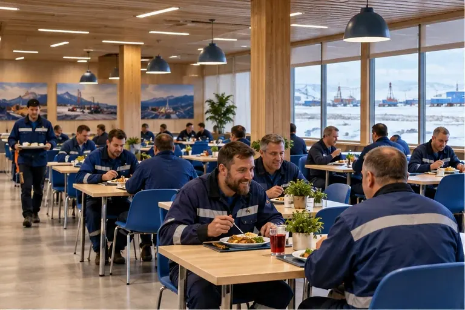

НАПРАВЛЕНИЕ УСЛУГ
Сервисная поддержка
Сопутствующие процессы в единой системе обслуживания.

Состав услуг
- Прачечная и химчистка
- Поездки и размещение
- Подбор, учёт и подготовка персонала
- Координация и контроль услуг
Состав и условия обслуживания определяются техническим заданием заказчика.
Для каких объектов
Объекты, которым требуется несколько связанных сервисов. Решение адаптируется к условиям площадки и потребностям людей.
Что обсудим на старте
Перечень процессов, график работы, распределение ответственности и приоритеты заказчика.
Подготовить исходные данные →СЛЕДУЮЩИЙ ШАГОбсудим задачи
Перейти к обсуждению →